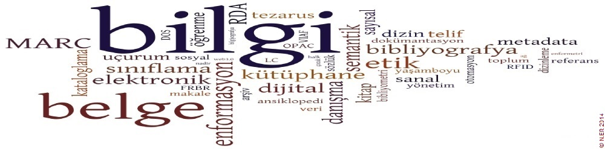

Anasayfam

1987’de Arşivcilik Bölümü adıyla kurulan Bilgi ve Belge Yönetimi Bölümü, ilk mezunlarını 1992 yılında verdi. Haziran 2002’de Arşivcilik olan bölüm adı YÖK kararı ile Bilgi-Belge Yönetimi’ne dönüştürüldü. Bu dönüşümle birlikte ders içeriği zenginleşen bölümde; kütüphanecilik, arşivcilik, müze yönetimi, belge yönetimi ve bilgi teknolojileri sahalarında eğitim verilmeye başlandı. Marmara Üniversitesi’nin en köklü bölümlerinden biri olan Bilgi ve Belge Yönetimi, Türkiyat Araştırmaları Enstitüsü bünyesinde yüksek lisans ve doktora programlarını yürütmektedir. Öğrencilerimiz üniversitemizin tüm bölümlerinde yandal ve çift anadal programlarına devam ederek çift diploma sahibi olabilmektedir. Aynı şekilde Erasmus programı kapsamında yurtdışında bir veya iki dönem eğitim görme imkanına sahiptirler. Bölümümüzde beş profesör, üç doçent, dört doktor öğretim üyesi ve biri doktorasını tamamlamış üç araştırma görevlisi ile eğitim öğretim faaliyetlerine devam etmektedir. Bölümümüzde Hukuk, Mühendislik, Teknoloji ve İletişim Fakültelerinden gelen misafir öğretim üyeleri de ders vermektedir.